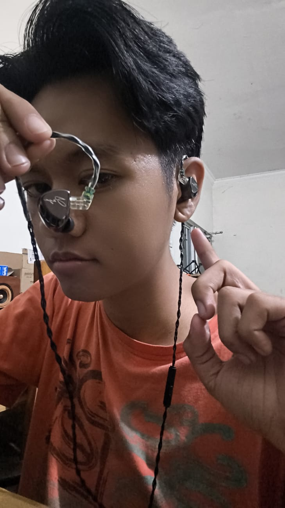

Bermain Alat Musik
Bermain musik adalah hobi saya untuk mengekspresikan kreativitas dan menyegarkan pikiran di waktu luang.
Bermain musik adalah hobi saya untuk mengekspresikan kreativitas dan menyegarkan pikiran di waktu luang.

Bermain biliar melatih fokus, konsentrasi, ketenangan, serta ketepatan perhitungan sudut pukulan bola.

Mendengarkan musik membantu saya memperbaiki suasana hati, melepas penat setelah beraktivitas, serta mencari inspirasi baru.